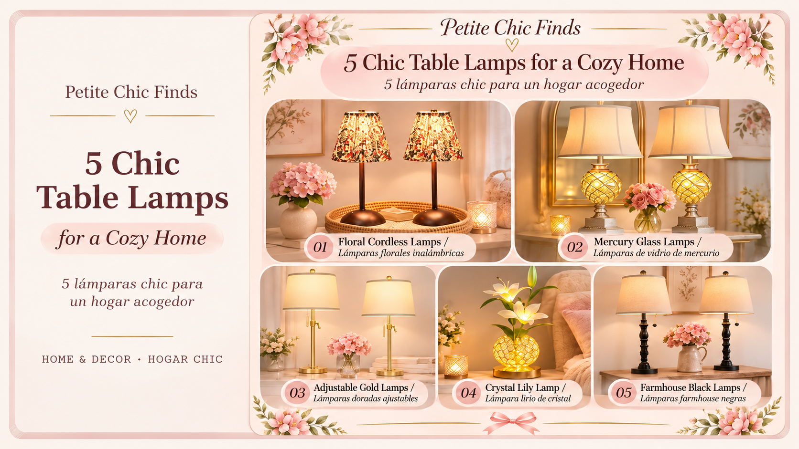

HOME & DECOR · HOGAR CHIC · AMAZON FINDS
5 Chic Table Lamps for a Cozy Home
5 lámparas chic para un hogar acogedor

for a Cozy HomeCinco ideas para iluminar tus rincones con estilo
The right table lamp does more than brighten a corner: it can soften a room, introduce texture, and bring personality to a small space. Here are five different Amazon finds, from floral cordless lamps to a classic black farmhouse pair. Choose the style that suits your room and check dimensions and product details before ordering.
Una lámpara de mesa puede hacer mucho más que iluminar: aporta calidez, textura y personalidad incluso a los espacios pequeños. Seleccionamos cinco hallazgos diferentes de Amazon, desde lámparas florales inalámbricas hasta un juego clásico estilo farmhouse. Elige el estilo que combine con tu hogar y revisa medidas y detalles antes de comprar.
LCZVAVA · Romantic & cozy / Romántico y acogedor
Floral Cordless Table Lamps — Set of 2
Dos lámparas florales inalámbricas
Two rechargeable LED table lamps with floral-patterned shades and warm, decorative appeal. The listing describes a 5,000 mAh rechargeable battery, touch controls, three color temperatures, stepless dimming, memory, and USB-C charging. A lovely choice for a small console or cozy bedside vignette.
Dos lámparas LED recargables con pantallas florales que aportan calidez y personalidad. Según la ficha mostrada, cuentan con batería de 5.000 mAh, control táctil, tres temperaturas de color, regulación continua, memoria y carga USB-C. Ideales para una consola estrecha o una mesita de noche.
Shop on Amazon / Comprar en Amazon ↗Hamucd · Classic glamour / Elegancia clásica
Mercury Glass Table Lamps — Set of 2
Dos lámparas de vidrio de mercurio
An ornate pair of approximately 29-inch table lamps with shimmering mercury-glass accents and cream shades. The supplied listing mentions dimming, a night-light function, and two USB ports. Consider them for a console or living room where the lamp bases can become part of the decor.
Un par de lámparas decorativas de aproximadamente 29 pulgadas, con detalles de vidrio de mercurio y pantallas crema. La ficha mostrada menciona intensidad regulable, luz nocturna y dos puertos USB. Una opción para consolas o salas donde las bases también forman parte de la decoración.
Shop on Amazon / Comprar en Amazon ↗JUNNAI · Modern & minimal / Moderno y minimalista
Adjustable Gold Table Lamps — Set of 2
Dos lámparas doradas de altura ajustable
Minimal gold-finish table lamps with white shades, adjustable height from 22 to 30 inches, three light color temperatures, and a pull-chain switch according to the supplied listing. Their slim silhouettes work well on matching bedside tables or narrow consoles.
Lámparas de acabado dorado y pantallas blancas con altura regulable entre 22 y 30 pulgadas. Según la ficha compartida, ofrecen tres temperaturas de luz e interruptor de cadena. Sus líneas sencillas combinan bien con mesas de noche o consolas estrechas.
Shop on Amazon / Comprar en Amazon ↗MMHF · Floral statement / Acento floral
Stargazer Lily Crystal Lamp
Lámpara decorativa de lirios de cristal
A floral accent lamp with softly illuminated lily blossoms and a faceted crystal-look globe. The listing describes a rechargeable cordless design, three light modes, and touch control. Try it as a decorative focal point on a bedside table or small shelf.
Una lámpara de acento con flores de lirio iluminadas y una esfera de apariencia cristalina. La ficha indica que es recargable e inalámbrica, con tres modos de luz y control táctil. Funciona como punto focal en una mesita de noche o repisa.
Shop on Amazon / Comprar en Amazon ↗Terpsichore · Farmhouse charm / Encanto farmhouse
Black Farmhouse Table Lamps — Set of 2
Dos lámparas negras estilo farmhouse
A classic pair of 26.25-inch table lamps with turned black bases, pale fabric shades and pull chains. The listing notes that bulbs are not included. The contrast between dark bases and warm cream shades complements rustic, transitional or cozy interiors.
Un par de lámparas de 26,25 pulgadas con bases negras torneadas, pantallas claras de tela e interruptores de cadena. La ficha señala que las bombillas no están incluidas. El contraste de negro y crema combina con interiores rústicos y acogedores.
Shop on Amazon / Comprar en Amazon ↗These are editorial inspiration images; actual products, shades, finishes, features and accessories may differ. Details above come from the product listings shared for this guide, not hands-on tests. Amazon availability, prices, delivery and specifications may change. Lamps and decor accessories in the illustrations are not necessarily sold together.
Las imágenes son ilustraciones de inspiración; los productos reales, sus acabados, funciones y accesorios pueden variar. Los detalles proceden de las fichas compartidas, no de pruebas de uso. Los precios, existencias, entregas y especificaciones de Amazon pueden cambiar. Los adornos mostrados no necesariamente están incluidos con las lámparas.